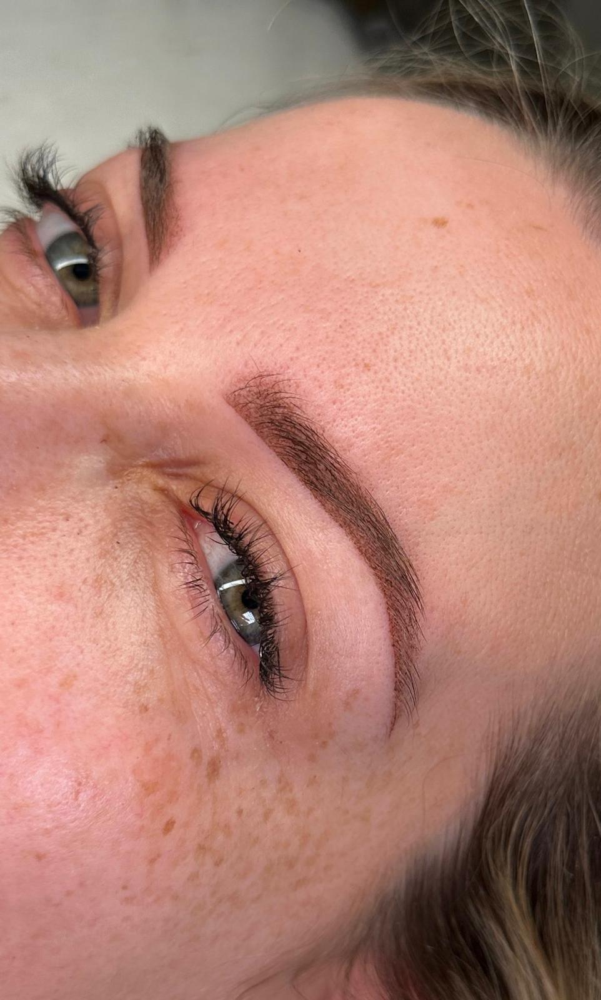

„Ich möchte Microblading.“ Diesen Satz höre ich oft, und im Gespräch stellt sich dann heraus: Gemeint sind einfach schöne, gefüllte Brauen, die morgens nicht mehr nachgezeichnet werden müssen.
Microblading ist aber eine ganz bestimmte Technik, und Powder Brows sind eine andere. Vorab ganz offen: Ich selbst arbeite ausschließlich mit Pudertechniken, also Powder und Ombré Brows. Gerade deshalb möchte ich dir beide ehrlich erklären. Klick dich durch, die Grafik zeigt oben Microblading und unten Powder Brows.
Striche oder Puder: zwei verschiedene Werkzeuge
Beim Microblading wird mit einem Handwerkzeug gearbeitet, an dessen Ende feine Nadeln in einer Reihe sitzen. Damit werden einzelne Härchenstriche in die Haut gezogen. Das Ergebnis soll wie natürliche Haare aussehen.
Bei Powder Brows setze ich das Pigment mit einem feinen Gerät Punkt für Punkt in die Haut. So entsteht ein weicher, pudriger Schatten, der wie dezent geschminkt wirkt, vorne heller und hinten etwas kräftiger.
Auf feiner Haut sehen beide schön aus
Auf eher trockener, feinporiger Haut bleiben Härchenstriche nach der Abheilung meist klar und wirken sehr natürlich. Das ist die Stärke von Microblading, besonders wenn nur einzelne Lücken gefüllt werden sollen.
Powder Brows heilen auf dieser Haut ebenfalls weich und gleichmäßig ab. Hier ist es vor allem eine Geschmacksfrage: einzelne Härchen oder ein sanfter Schatten.
Bei fettiger Haut verschwimmen Striche eher
Auf öliger oder großporiger Haut können feine Striche beim Abheilen auseinanderlaufen. Aus scharfen Härchen werden dann eher verwaschene Linien, und der natürliche Effekt geht verloren.
Ein Puderlook ist hier deutlich verzeihender, weil er ohnehin weich gedacht ist. Deshalb sind Powder Brows für fettige oder Mischhaut oft die bessere Wahl. Genau das schauen wir uns im Vorgespräch gemeinsam an.
Was nach ein, zwei Jahren übrig bleibt
Jede Pigmentierung verblasst mit der Zeit, wie schnell, hängt von Haut, Pflege und Sonne ab. Feine Härchenstriche verlieren dabei oft schneller an Wirkung, Microblading hält deshalb meist kürzer, häufig etwa ein bis zwei Jahre.
Powder Brows halten in der Regel ein bis drei Jahre. Weil der Puderlook flächiger ist, wirkt er auch beim Verblassen noch gleichmäßig.
Auffrischen, wenn es dir zu blass wird
Beide Techniken lassen sich auffrischen. Beim Microblading werden die Striche dafür erneut gezogen. Bei Powder Brows wird der Schatten wieder verdichtet, die Form lässt sich dabei auch leicht anpassen.
Wann eine Auffrischung sinnvoll ist, entscheidest du selbst. Viele kommen, sobald ihnen die Brauen zu hell werden.
Microblading und Powder Brows im direkten Vergleich
Microblading
- Technik
- Handwerkzeug, einzelne Härchenstriche
- Look
- natürliche Härchen, sehr dezent
- Passt zu
- eher trockener, feinporiger Haut
- Hält
- meist kürzer, häufig etwa ein bis zwei Jahre
- Bei mir
- biete ich nicht an
Powder Brows
- Technik
- feines Gerät, Pigment Punkt für Punkt
- Look
- weicher Puderschatten, wie dezent geschminkt
- Passt zu
- fast allen Hauttypen, auch fettiger Haut
- Hält
- in der Regel ein bis drei Jahre
- Bei mir
- 300 €, Nachbehandlung 50 €
Was passt zu dir?
- Du hast eher fettige Haut oder große Poren? Dann sind Powder Brows meist die sicherere Wahl.
- Du schminkst deine Brauen gern etwas definierter? Der Puderlook kommt dem am nächsten. Mit einem Verlauf von hell nach kräftig werden daraus Ombré Brows.
- Du möchtest nur einzelne Lücken unsichtbar füllen und hast feine, trockene Haut? Dann kann Microblading passen. Dafür bist du bei einer Spezialistin für diese Technik richtig.
- Du hast schon eine ältere Pigmentierung? Dann schauen wir zuerst, wie viel davon noch da ist. Mehr dazu im Artikel Remover oder Laser?
So sehen Powder Brows in echt aus
Direkt nach der Behandlung ist die Farbe deutlich kräftiger. Abgeheilt wirkt der Puderlook weich und natürlich.


Häufige Fragen
Beim Microblading werden mit einem Handwerkzeug einzelne Härchenstriche gezogen. Bei Powder Brows wird das Pigment mit einem feinen Gerät Punkt für Punkt gesetzt, sodass ein weicher, pudriger Schatten entsteht.
Powder Brows halten in der Regel ein bis drei Jahre, Microblading meist etwas kürzer. Wie lange es bei dir hält, hängt von Hauttyp, Pflege und Sonne ab.
Oft ja, wenn das alte Microblading schon gut verblasst ist und die Form passt. Sind die alten Striche noch dunkel oder verlaufen, werden sie vorher mit dem Remover aufgehellt. Das schauen wir uns vorab gemeinsam an.